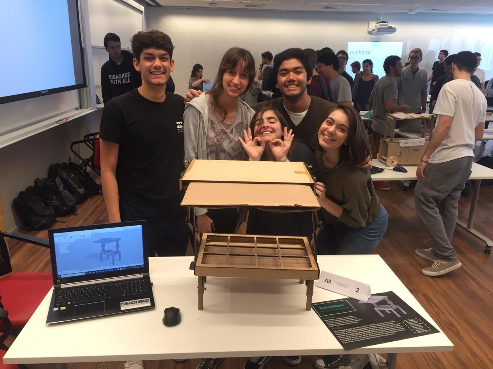

Ambulantes

O que foi feito:
Durante a realização do projeto, foram realizadas diversas entrevistas, afim de achar um problema real de um ambulante e através dele criar um protótipo funcional que ajudasse a melhorar o desempenho dele no seu comércio.
Equipe:
- - Ana Clara
- - Beatriz Lourenço
- - Gabriel Yamashita
Materiais:
- - Madeira
- - Filamento 3D
- - Papelão
- - Impressora 3D
- - Cortadora a laser
Objetivos:
O principal objetivo deste projeto é de aprender técnicas de rapport, todo o processo de criar um protótipo até um projeto funcional com cada etapa específica e aprender de um jeito empreendedor a criar um produto e vendê-lo.